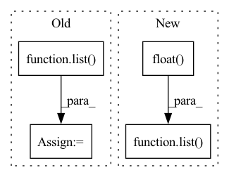

Pattern ID :35960
Before Change
optimizer.step() //// update weights
pred_val = pred >= 0.5 //// get predictions
y_true += list( targets.int().numpy()) //// accumulate targets from batch
y_pred += list(
pred_val.data.int().detach().cpu().numpy()
) //// accumulate preds from batchAfter Change
optimizer.step()
//// accumulate targets from batch
y_true += list( targets.float() .numpy())
//// accumulate preds from batch
y_pred += list(pred.data.float().detach().cpu().numpy())
In pattern: SUPERPATTERN
Frequency: 3
Non-data size: 4
Instances Fragment ID: 102285720
Project Name: shahrukhx01/siamese-nn-semantic-text-similarity
Commit Name: f3d054dd14ef532c408b1306c3341115777ac22f
Time: 2021-12-30
Author: sk28671@gmail.com
File Name: siamese_sts/trainer/train.py
M Class Name: AnonimousClass
N Class Name: AnonimousClass
M Method Name: train_model(6)
N Method Name: train_model(6)
M Parent Class:
N Parent Class:
M File Name: siamese_sts/trainer/train.py
N File Name: siamese_sts/trainer/train.py
M Start Line: 16
M End Line: 47
N Start Line: 16
N End Line: 59
Before Change
pred.to(device), torch.autograd.Variable(targets.float()).to(device)
) //// compute loss
pred_val = pred >= 0.5 //// get predictions
y_true += list( targets.int())
y_pred += list(pred_val.data.int().detach().cpu().numpy())
total_loss += loss
acc = accuracy_score(y_true, y_pred) //// computing accuracy using sklearn"s functionAfter Change
)
y_true += list(targets.float())
y_pred += list( pred.data.float() .detach().cpu().numpy())
total_loss += loss
//// computing accuracy using sklearn"s function
acc = r2_score(y_true, y_pred)
Fragment ID: 102285723
Project Name: shahrukhx01/siamese-nn-semantic-text-similarity
Commit Name: f3d054dd14ef532c408b1306c3341115777ac22f
Time: 2021-12-30
Author: sk28671@gmail.com
File Name: siamese_sts/trainer/train.py
M Class Name: AnonimousClass
N Class Name: AnonimousClass
M Method Name: evaluate_dev_set(5)
N Method Name: evaluate_dev_set(5)
M Parent Class:
N Parent Class:
M File Name: siamese_sts/trainer/train.py
N File Name: siamese_sts/trainer/train.py
M Start Line: 78
M End Line: 95
N Start Line: 91
N End Line: 116
Before Change
// When
for features, labels in training_data:
encoded_graph = self.graph_encoder.forward(features, adjacency_matrix=labels, batch_size=batch_size)
encoded_graph_shape = list( encoded_graph.shape)
// Then
self.assertEqual(encoded_graph_shape_expected, encoded_graph_shape)
After Change
encoded_graph_shape_expected = list(BASE_GRAPH_NODE_FEATURES.shape)
// When
encoded_graph_shape = self.graph_encoder.encode(BASE_GRAPH_NODE_FEATURES, BASE_GRAPH.view(-1).float() ).shape
// Then
self.assertEqual(encoded_graph_shape_expected, list( encoded_graph_shape) )
Fragment ID: 102285727
Project Name: kovanostra/message-passing-neural-network
Commit Name: a2f3bf3246cea04886b7f8f676402f9de1a00871
Time: 2020-04-26
Author: kovanostra@gmail.com
File Name: tests/domain/test_graph_encoder.py
M Class Name: TestGraphEncoder
N Class Name: TestGraphEncoder
M Method Name: test_encode_graph_returns_the_expected_shape(1)
N Method Name: test_encode_graph_returns_the_expected_shape(1)
M Parent Class: TestCase
N Parent Class: TestCase
M File Name: tests/domain/test_graph_encoder.py
N File Name: tests/domain/test_graph_encoder.py
M Start Line: 61
M End Line: 75
N Start Line: 76
N End Line: 82